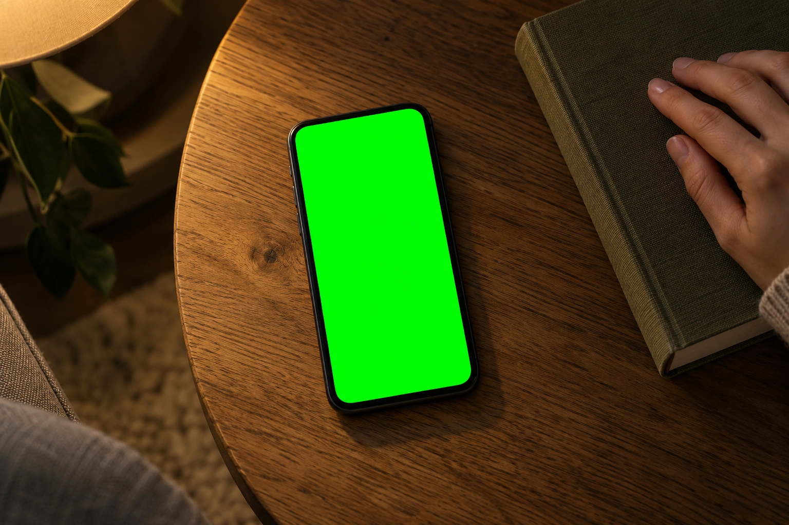

01 / MAKE IT YOURS
Your goal.
Your schedule.
Choose a target, a unit and the days that work for you. Use a template or create your own habit.

Follow one Reading habit from its 15-page goal through a completed check-in, its Journal record and monthly Insights. Scroll or choose a screen.
HABITS. A LITTLE AT A TIME.
A calm place for your habits.
One tap to check in. A clear view of your progress.
01 / CHOOSE YOUR EVERYDAY
A goal that fits your life.
Set your target, your days and your own pace.
02 / A SMALL ACTION
Mark Reading complete.
Your check-in is saved, with no required note.
03 / YOUR JOURNAL
Journal keeps the time and target
of your completed Reading habit.
04 / THE LONGER VIEW
The Reading month shown here has 28 completed days and 2 missed days. See both in your progress.
Your completed Reading habit is saved in Journal.
See how your check-ins add up over time.

Loading app preview…
BUILT AROUND YOUR DAY
01 / MAKE IT YOURS
Choose a target, a unit and the days that work for you. Use a template or create your own habit.
02 / APPEARANCE
Choose the look you prefer. Your habits and history stay the same.

03 / WEEKLY RECAP
Compare this week with last week. Review manual check-ins, with protected days counted separately.

FREE & PRO
Start with the daily essentials.
Choose Pro when you want more room.
Habumi Free
THE ESSENTIALSA simple place to build your daily routine.
Use Habumi without an account.
Habumi Pro
MORE ROOMEverything in Free, with a longer view.
Plans, prices, renewal terms and eligible offers are shown through Apple in the app. A Freeze Shield can protect an eligible streak; it does not record a completed habit. Apple Health access is optional and read-only for supported linked habits with Pro.
A FEW PRACTICAL THINGS
What to expect, what’s optional,
and how to keep your records.
Download Habumi for iPhone and iPad on the App Store.
No. You can check in manually. Apple Health access is optional and read-only for supported linked habits. You choose which permissions to grant.
No. A Freeze Shield can protect an eligible streak, but the protected day is not recorded as a completed habit. Weekly Recap distinguishes manual check-ins from protected days.
Export a recovery archive and keep it somewhere you control. You can later import supported records. Restore Purchases restores eligible paid access, not habit history.
A LITTLE TODAY. AND AGAIN TOMORROW.
Start with three active habits, free.
One clear place to begin.
Available for iPhone & iPad.
